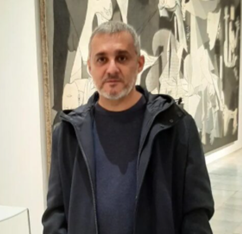

Manuel Fournier (Madrid) es un artista madrileño cuya obra explora la relación entre el ser humano y el espacio que habita. Entiende la arquitectura como una extensión del cuerpo y la identidad, y sus esculturas investigan el concepto de hábitat como refugio, carga y memoria.
Sus figuras y estructuras arquitectónicas se entrelazan hasta difuminar el límite entre el cuerpo y el hogar, generando formas que transmiten anonimato, protección y aislamiento. El uso de madera y resina refuerza la tensión entre lo orgánico y lo construido, planteando una reflexión sobre cómo los espacios que ocupamos nos definen y nos transforman.
A lo largo de su trayectoria, Fournier ha presentado su obra en exposiciones individuales en Madrid y en Londres, así como en el Cultural Center Oporto. También ha participado en certámenes y muestras colectivas relevantes, como el Salón de Otoño de la Asociación Española de Pintores y Escultores y el XIII Certamen Nacional Transformarte, consolidando su presencia en la escena escultórica contemporánea.
Su trabajo se distingue por la capacidad de transformar la arquitectura en experiencia emocional y poética, convirtiendo los espacios que habitamos en reflejos de nuestra memoria, identidad y corporalidad. Cada obra invita a una reflexión íntima sobre la protección, la soledad y la relación del ser humano con su entorno, consolidando a Fournier como una voz singular en la escultura madrileña contemporánea.
Habitats
Baloons
BrokenFrame
OtherWorks
CV
Sustituye este texto por tu biografía artística, exposiciones, concursos, statement y trayectoria.
Contact
For acquisitions, commissions or collaborations.